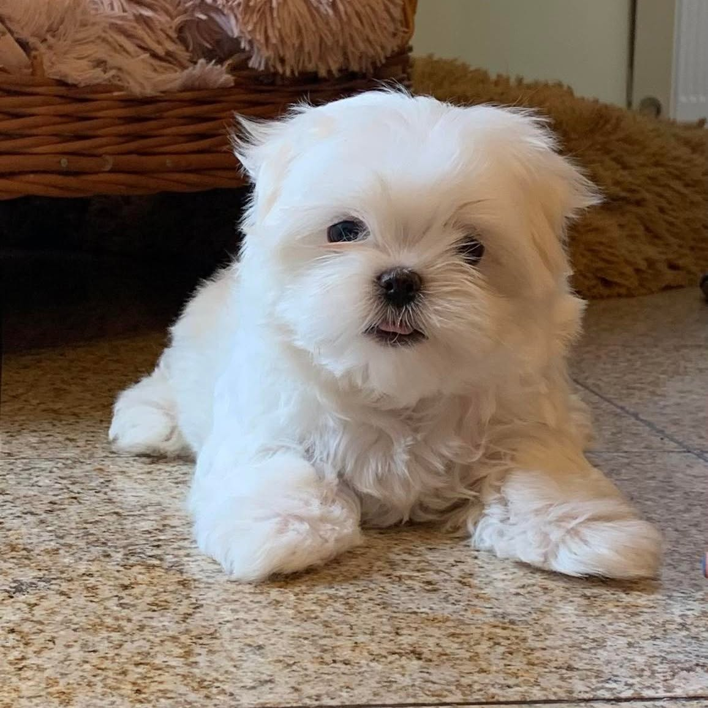

Pielęgnacja zaczyna się od zaufania
Najważniejsza rzecz, jakiej nauczyło nas doświadczenie groomerskie: pies, który lubi pielęgnację, to pies, którego pielęgnacji nauczono przez przyjemność. Dorosły piesek szarpiący się przy czesaniu to prawie zawsze historia zaniedbanych pierwszych miesięcy.
Dlatego zacznij od pierwszego dnia w domu, ale nie od zabiegów, tylko od dotyku:
- Codziennie przez chwilę dotykaj łapek, uszu, pyszczka i brzuszka, przy przytulaniu, z czułym słowem i przysmakiem.
- Pokaż szczotkę, pozwól powąchać, przeciągnij raz po grzbiecie, nagroda i koniec. Następnego dnia dwa pociągnięcia.
- Sesje mają być krótkie i kończyć się przed protestem, zawsze na plusie.
Po kilku tygodniach takiej pracy czesanie, przemywanie oczu i obcinanie pazurków stają się rutyną, a wizyty u groomera i weterynarza, bezstresowe. Nasze szczenięta zaczynają tę naukę jeszcze u nas.
Szczotkowanie: maltańczyk i chihuahua
Maltańczyk (szata bez podszerstka, rosnąca stale):
- W krótkiej fryzurze: dokładne szczotkowanie 2-3 razy w tygodniu; w pełnej szacie, codziennie.
- Zestaw: szczotka z długim pinem + metalowy grzebień do wykończenia.
- Newralgiczne miejsca, gdzie najszybciej robią się kołtuny: za uszami, pod pachami, w pachwinach i pod obrożą szelek. Grzebień musi przejść do skóry, nie tylko po wierzchu.
- Kołtunek rozplątuj palcami od końca włosa, przytrzymując sierść przy skórze, nigdy nie wyrywaj „na siłę”.
Chihuahua:
- Krótkowłosy: raz w tygodniu gumowa rękawica lub miękka szczotka, usuwa martwy włos i działa jak masaż.
- Długowłosy: szczotkowanie 2-3 razy w tygodniu, ze szczególną uwagą na pióra za uszami, na ogonie i portkach.
Kąpiel i suszenie
Rytm kąpieli: zwykle co 3-4 tygodnie, a poza planem, po prostu wtedy, gdy piesek się ubrudzi. Zasady, które oszczędzą Wam obojgu nerwów:
- Zawsze wyczesz psa przed kąpielą, mokry kołtun zaciska się jak supeł i bywa nie do uratowania.
- Używaj wyłącznie szamponu dla psów (dla szczeniąt, szczenięcego). Ludzkie kosmetyki, nawet dziecięce, mają niewłaściwe pH dla psiej skóry.
- Woda letnia, przepływ spokojny; głowę myj na końcu i chroń uszy przed zalaniem (możesz delikatnie włożyć wacik).
- Szampon rozcieńcz w dłoni lub butelce z wodą, łatwiej rozprowadzić i wypłukać. Płucz dłużej, niż myślisz, że trzeba.
- Susz do sucha: najpierw ręcznik, potem suszarka na letnim (nie gorącym!) nawiewie, czesząc równolegle. Miniaturki szybko się wychładzają, „samo wyschnie” to u nich zły pomysł, a u maltańczyka to też gwarancja kołtunów.
Rada z naszej hodowli
Przyzwyczajaj szczeniaka do suszarki na raty: najpierw sam dźwięk z daleka przy zabawie, potem chłodny nawiew na grzbiet przez kilka sekund, zawsze z przysmakiem. Po dwóch tygodniach suszenie przestaje być tematem, na całe życie.
Oczy i przebarwienia łzowe
U ras o jasnej szacie, zwłaszcza maltańczyków, pod oczami potrafią pojawiać się rdzawe „ścieżki łzowe”. To efekt barwników zawartych we łzach; problem głównie kosmetyczny, ale warto nad nim panować:
- Codziennie przemywaj okolice oczu, preparatem do higieny oczu dla psów lub przegotowaną letnią wodą, osobnym płatkiem na każde oko, i osusz.
- Włos przy kącikach oczu utrzymuj krótko przycięty (zrobi to groomer), żeby nie drażnił rogówki i nie „wciągał” łez.
- Nasilenie przebarwień bywa większe u szczeniąt przy wymianie zębów, zwykle łagodnieje po jej zakończeniu.
- Nagła zmiana, obfite łzawienie, mrużenie, zaczerwienienie, ropna wydzielina, to już nie kosmetyka, tylko powód do wizyty u weterynarza.
Uszy i pazurki
Uszy kontroluj raz w tygodniu: zdrowe ucho jest różowe, bez nieprzyjemnego zapachu i nadmiaru wydzieliny. Czyść tylko widoczną część małżowiny, płynem do uszu dla psów i płatkiem kosmetycznym. Nigdy nie wchodź patyczkiem w kanał słuchowy. Brzydki zapach, potrząsanie głową i drapanie ucha = wizyta u weterynarza.
Pazurki u piesków domowych ścierają się słabo, więc przycinamy je zwykle co 3-4 tygodnie (w tym wilczy pazur, który nie dotyka podłoża!):
- Używaj małych obcinaczek-gilotynek lub nożyczek dla miniaturek.
- Przycinaj po kilka milimetrów, w jasnych pazurkach widać różową „żywą” część, której nie wolno naruszyć; w ciemnych tnij ostrożniej, po plasterku.
- Sygnał, że czas na zabieg: stukanie pazurków o panele.
- Na wszelki wypadek miej w domu pudr hemostatyczny, a jeśli wolisz, pazurki przytnie groomer lub weterynarz przy okazji wizyty.
Zęby: najczęściej zaniedbywany temat
Powiemy to wyraźnie: u ras miniaturowych zęby to pielęgnacyjny temat numer jeden. Mały pyszczek oznacza stłoczone zęby, a te, błyskawiczne odkładanie płytki i kamienia. Zaniedbane zęby to nie tylko brzydki oddech: to ból, wypadające zęby i bakterie obciążające serce i nerki.
- Szczotkuj zęby psa docelowo codziennie, minimum 3 razy w tygodniu, szczoteczką dla psów (lub nakładką na palec) i pastą dla psów (ludzka jest szkodliwa, zawiera fluor i często ksylitol).
- Naukę zacznij od smakowania pasty z palca, potem pocieranie zębów palcem, na końcu szczoteczka. Po kilka sekund, z nagrodą.
- Wspieraj się gryzakami dentystycznymi dla miniaturek, ale to dodatek, nie zamiennik szczotkowania.
- U szczeniąt pilnuj wymiany zębów (ok. 4.-7. miesiąca): u małych ras mleczaki lubią nie wypadać, gdy wyrastają już stałe. „Podwójne ząbki” wymagają wizyty u weterynarza.
- Raz w roku poproś weterynarza o przegląd jamy ustnej; profesjonalne usuwanie kamienia wykonuje się, gdy jest taka potrzeba.
Kiedy do groomera, a co zrobisz w domu
Dom i salon groomerski to zespół, nie konkurencja. Sensowny podział wygląda tak:
- W domu, na bieżąco: szczotkowanie, przemywanie oczu, kontrola uszu, szczotkowanie zębów, ewentualnie kąpiele między strzyżeniami.
- U groomera co 6-8 tygodni (maltańczyk): kąpiel profesjonalnymi kosmetykami, strzyżenie fryzury, skracanie włosów przy oczach, higiena opuszek i okolic intymnych, pazurki.
- Chihuahua: zwykle wystarczy groomer okazjonalnie (pazurki, kąpiel, trymowanie długowłosych), to rasa niemal bezobsługowa.
Pierwszą wizytę u groomera umów wcześnie, nie po to, by dużo strzyc, ale by maluch poznał stół, suszarkę i obce ręce, gdy jest najbardziej chłonny. Dobry salon zrobi z pierwszej wizyty przyjemne „przedszkole”.

Najczęstsze pytania
Od kiedy można kąpać szczeniaka?
Technicznie, gdy jest zdrowy, zaadaptowany i w domu jest ciepło, zwykle po ukończeniu ok. 3 miesięcy; wcześniej wystarczy pielęgnacja na sucho i wilgotna ściereczka na miejscowe brudy. Pierwsza kąpiel: szybko, letnia woda, szampon szczenięcy, natychmiastowe staranne wysuszenie.
Jak często strzyc maltańczyka?
Fryzura „szczeniaczka” wymaga odświeżenia u groomera co 6-8 tygodni. Między wizytami rośnie głównie okolica oczu, jeśli włos zaczyna wpadać do oczu wcześniej, groomer skróci samą „grzywkę” w kilka minut.
Pies ucieka na widok szczotki, jak to odkręcić?
Wróć do zera: połóż szczotkę na podłodze, nagradzaj samo podejście do niej. Potem jedno pociągnięcie po grzbiecie, nagroda, koniec sesji. Buduj po kilka sekund dziennie i nie przytrzymuj psa na siłę. Przy dużych zaległościach (filce) najpierw poproś groomera o uporządkowanie szaty, rozczesywanie bolących kołtunów tylko pogłębia niechęć.
Czy maszynka domowa to dobry pomysł?
Do poprawek (np. okolice higieniczne), może być, jeśli masz sprzęt dla psów i pewną rękę. Pełne strzyżenie zostaw jednak groomerowi: psia skóra jest cienka, a strzyżenie miniaturki przy skórze to łatwy sposób na skaleczenie. Koszt wizyty jest niższy niż stres obu stron.
Masz pytania albo szukasz swojego maluszka? Zadzwoń pod numer 601 074 022, powiemy, co aktualnie mamy, kiedy planujemy kolejny miot i chętnie doradzimy w każdym temacie z tego poradnika.
Zadzwoń